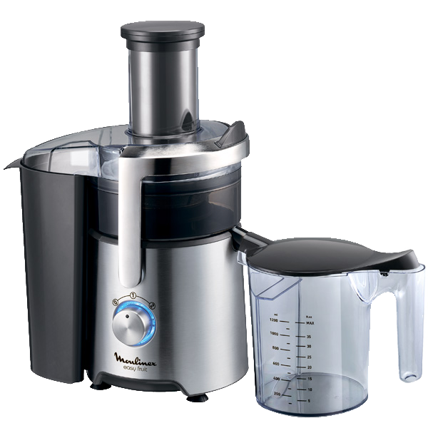

Соковыжималка центробежная Moulinex JU610D10
Соковыжималка Moulinex JU610D10 – надёжный прибор с практичной отделкой из нержавеющей стали, легко очищающейся от любых загрязнений. Аналогичный материал используется и в производстве его фильтра, что делает устройство очень долговечным, сохраняя высокую эффективность очистки сока при его длительном использовании.
| Заводские данные | |
|---|---|
| Гарантия | 2 года |
| Страна | Китай |
| Электропитание | |
| Потребляемая мощность | 800 Вт |
| Длина сетевого шнура | 1 м |
| Управление | |
| Макс. скорость вращения | 12000 об/мин |
| Управление | механическое |
| Количество скоростей | 2 |
| Индикация | |
| Включения | Да |
| Загрузочное отверстие | |
| Воз-ть загр. целых овощей и фрукт. | Да |
| Корпус | |
| Сепаратор пены | Да |
| Прорезиненные ножки | Да |
| Материал корпуса | нерж. сталь/ пластик |
| Материал сетки центрифуги | нерж. сталь |
| Резервуары | |
| Резервуар для сока | 1200 мл |
| Градуировка резервуара для сока | Да |
| Резервуар для мякоти | 2 л |
| Тип резервуара для мякоти | съемный |
| Комплектация | |
| Толкатель | в комплекте |
| Щетка для чистки | 1 |
| Безопасность | |
| Отключение при открытой крышке | Да |
| Отключение при перегреве | Да |
| Функции | |
| Противокапельная система | Да |
| Цвет | |
| Цвет | нерж. сталь/черный |
| Вес | |
| Вес | 9.4 кг |
| Габаритные размеры | |
| Высота | 42 см |
| Ширина | 34 см |
| Глубина | 20 см |
ПОЛНАЯ БЕЗОПАСНОСТЬ
Соковыжималка сохраняет устойчивое положение при активной работе благодаря применению широких прорезиненных ножек. Кроме того, она снабжена системой блокировки, не позволяющей включить её при неправильной сборке.
ПРОСТАЯ ОЧИСТКА
Все съёмные части устройства, включая кувшин для готового напитка, бункер для жмыха, крышку, толкатель и фильтр можно мыть в посудомоечной машине, экономя немало времени и усилий.
УНИВЕРСАЛЬНОЕ ПРИМЕНЕНИЕ
Наличие двух скоростей делает прибор подходящим для обработки твёрдых и мягких продуктов. Применение широкого загрузочного жёлоба позволяет не разрезать яблоки и другие подобные фрукты перед отжимом сока.